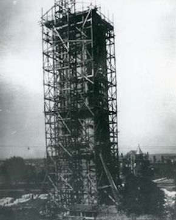

Welcome to the Compton Hill Water Tower, the newest of St. Louis' three towers and the first stop on our tour.
00
Quick Facts
179 feet tall
Designed by Harvey Ellis
Completed in 1898
Made from limestone, brick, and terra cotta
01
Before you enter,
walk around the tower.
Built on the 36-acre Reservoir Park, it was completed in 1898 after a design by
Harvey Ellis at a cost of $48,000. A nationally-known architect, Ellis would later go on to design the St. Louis City Hall and the Washington Terrace Gatehouse, among many other commissions.

The tower under scaffolding during intial construction, 1898.
02
Approach the outer
wall and note its texture.
The 179-foot tower is made of rusticated limestone, buff-colored brick and terra
cotta. Its walls are adorned with carvings of mythical animals and leaf patterns.
03
When you're ready,
make your way inside.
Once inside, you can see that the tower is in fact a standpipe encased in an
architectural tower. A critical part of the city's early water system, the standpipe absorbed surges from the late-19th-century reciprocating water pumps, ensuring consistent water pressure. Today, the tower is one of only a dozen standpipes that remain in the United States.
04
Take your time
as you go up the stairs.
A spiral staircase leads visitors to the top of the tower where an observation deck
under a bell-shaped roof of terra cotta tiles offers a 360-degree view of the City of St. Louis. During the 1904 World’s Fair, as many as 5,000 people visited the tower and promenaded in carriages through Reservoir Park.